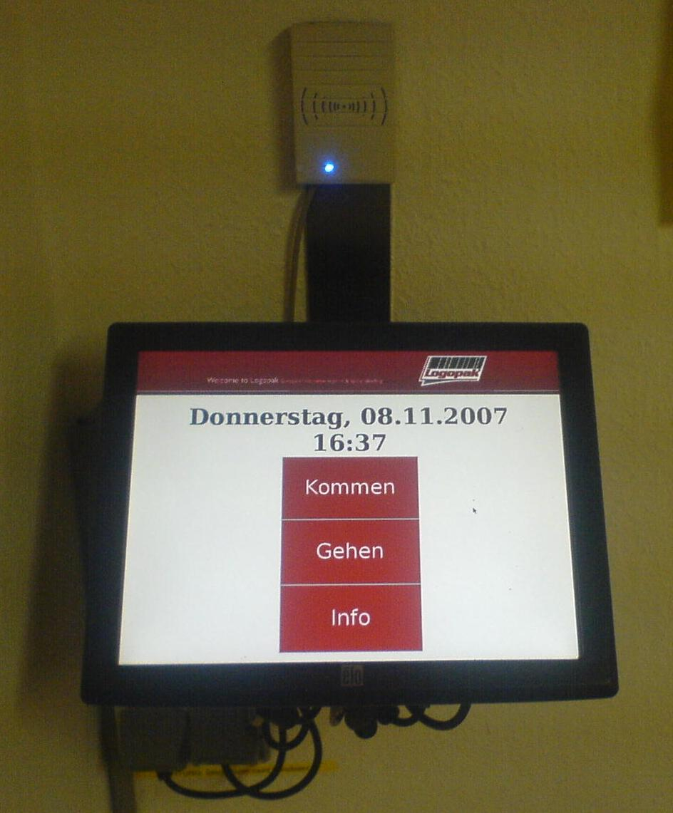
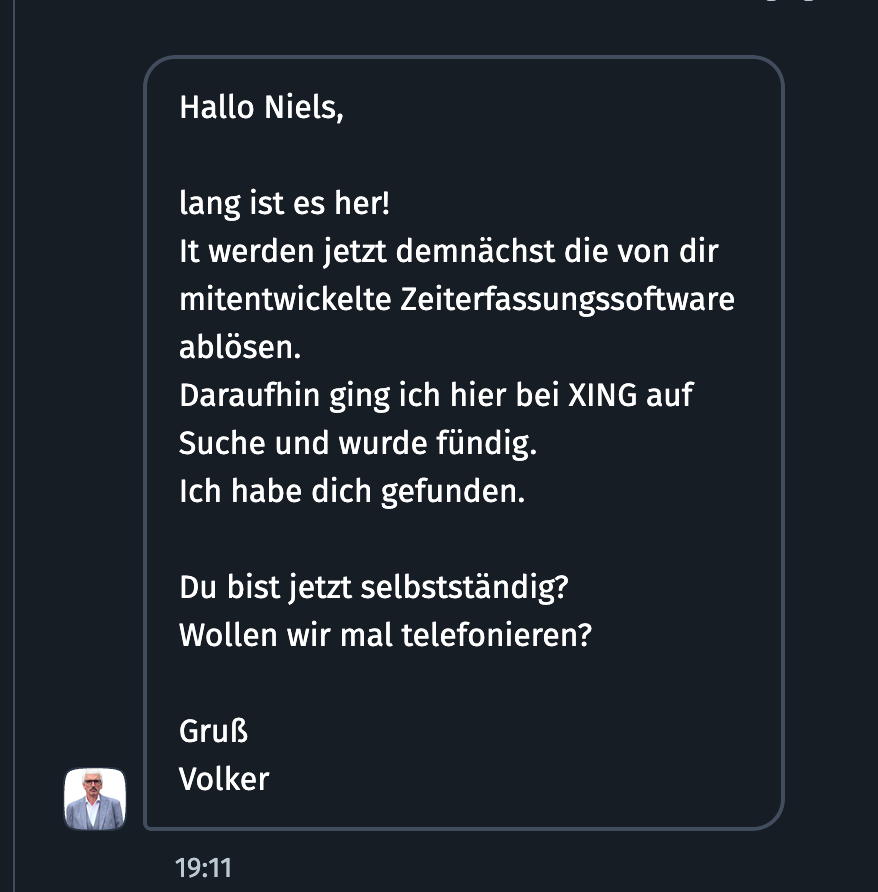
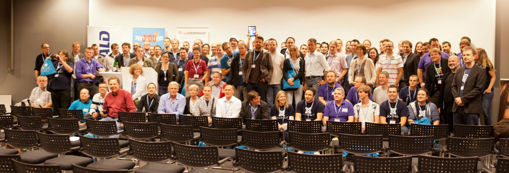
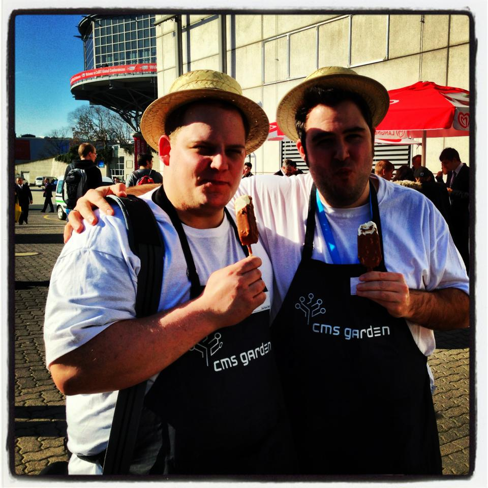
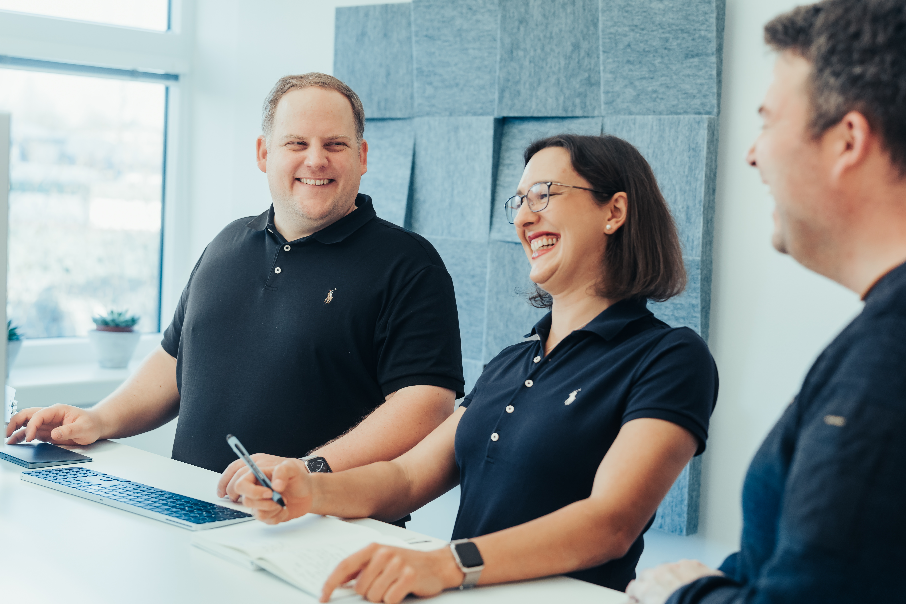

Beyond Child Themes
Extending YOOtheme Pro the Smart & Scalable Way
Niels Nübel · Kicktemp GmbH · YOOtheme Community Day 2025
Wie ich hier gelandet bin …
„Kannst du mal zeigen, was man alles mit YOOtheme machen kann?“
– Sascha Dube, YOOtheme
Wer bin ich?
- Kicktemp GmbH
- Seit 2009 selbstständig
- Joomla + YOOtheme Pro
- Web · Ads · Hosting
Meine Joomla Story
Optional: Ein Blick zurück …
Wie alles begann
2005 Marine – Ausbildung Informatikkaufmann
2007 Praktikum LogoPak – Zeiterfassungssoftware
Funfact
Die Zeiterfassung war über 11 Jahre im Einsatz
2009–2018
Gründung der NN-Medienagentur
2009 erste Joomla-Website: Bäcker Weiss

2011 JoomlaDay Hamburg
Treffen mit Sascha Dube & Steffan Schiewe (YOOtheme)
Kennenlernen von Stefan Wendhausen
Der Weg zur Kicktemp GmbH
7 Jahre gemeinsame Projekte mit Tec-Promotion
2018 Gründung der Kicktemp GmbH
Mit Stefan Wendhausen & Jenny Nübel
YOOmasterclass 2024
Unsere Schulungsreihe für YOOtheme Pro

→ Wissen teilen · Community stärken
Kicktemp Shop

Kernprodukt: KickYooAddons
Warum Kicktemp?
Name kommt vom „Kicktemp“-Template:
Kick = schnell · temp = Template
Warum Joomla?
- Flexibles Open-Source CMS
- Seit 2009 aktiv in der Entwicklung
- Community-Engagement & Events
Warum YOOtheme Pro?
Früher: eigene Templates
Heute: YOOtheme Pro → mehr Flexibilität & Effizienz
Bevor wir starten 👀
- Anwender?
- Entwickler?
Child Themes 🙋♂️🙋♀️
- Schon mal gebaut?
- Schon mal geflucht?
Child Themes – Fluch & Segen
- ✅ Update-sicher
- ✅ Schnell für Tweaks
- ❌ Projektgebunden
- ❌ Nicht wiederverwendbar
- ❌ Wartungsmonster
Die Alternative: Plugins
- 🔌 Modular & wiederverwendbar
- ⚡ Saubere Trennung von Code & Layout
- 📦 Zentral gepflegt, einfach zu updaten
- 🤝 Ideal für Teams & Agenturen
Plugins 🔌
- Joomla Plugin?
- YOOtheme Plugin?
- Regelmäßig?
YOOtheme Starter Plugin 🚀
Offizieller Boilerplate für Entwickler
- Schneller Einstieg
- Update-Server inklusive
- Saubere Basis für eigene Ideen
Webseiten
Vielen Dank!
Fragen? Lasst uns ins Gespräch kommen!
Website: kicktemp.com